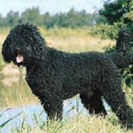
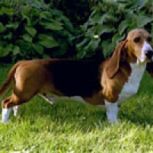
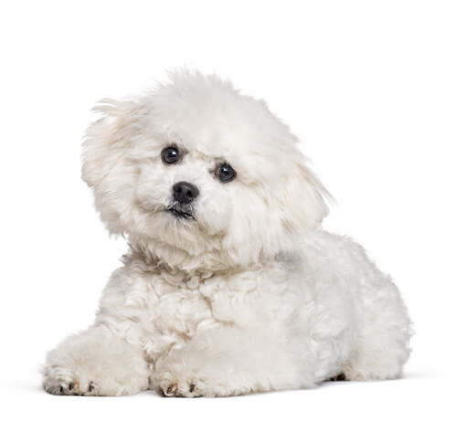

El Barbet
Altura a la cruz: Machos: 58 a 65 cm
Hembras: 53 a 61 cm
Con una tolerancia de + ó – 1 centímetro,corto y poderoso a tan solo 3200 pesos.

El Basset Artesiano de Normandia
Machos y hembras: 30 – 36 cm,
Tolerancia de más o menos 1 cm para los sujetos excepcionales,
Peso: 15 – 20 kgPIEL:
Elástica y fina,
PELO:
Raso, corto y apretado aunque no demasiado fino, el precio es 3090 pesos.

Bichón Frisé
Color:
Blanco.
Pelo:
Lanoso, muy abundante por todo el cuerpo, la cabeza y la cola. No se le cortará a no ser estrictamente necesiario.
Cabeza:
Con unas orejas largas de implantación alta, la mantiene caídas con cierta separación. Ojos vivarachos, grandes y oscuros como su trufa de color negro.
Con el stop muy marcado.
Cuerpo:
De lomo totalmente recto, es un perro que dan un aspecto bastante compacto ya que casi es tan alto como largo.
Extremidades anteriores:
Cortas y delgadas, recubiertas de mucho pelo.
Extremidades posteriores:
Cortas pero un poco más altas que las anteriores, musculadas pero delicada. Cubiertas de mucho pelo.
Cola:
La mantienen sobre la espalda, como el resto de su cuerpo, totalmente recubierta de pelo.
Promedio de vida:12 años.
